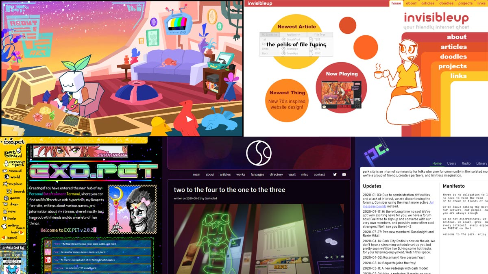
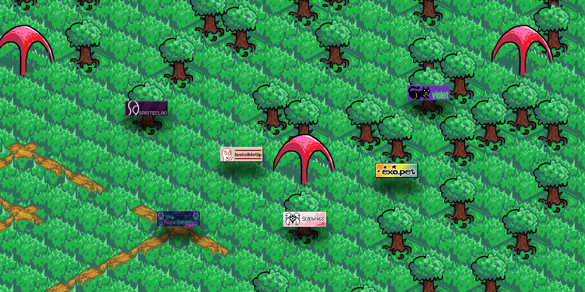

What is Netgardens Online?
Netgardens Online is still very early in development. Expect updates.
Where do you go on the internet when you want to find new things and meet new people? Almost certrainly these days, the answer is some form of social media such as Twitter, Facebook, Reddit, or YouTube.
This is great, in a lot of circumstances. Lots of people have found things they love. However, social media has quite a few flaws.For one, your social media presence is very impersonal. Usually, all you can change are your profile picture and what posts are on your page. But you can do a lot more on the internet!
Netgardens Online is an interactive personal website directory. It's designed to help you find people with the same sorts of passions and interests as you, in a natural and non-algorithmic way. It's also designed to give you a platform to share your creations in a way that won't get drowned out by thousands of other posts on the feed. There are no likes or retweets, just content.
This is more than a mere collection of links, though. In addition to having your own website to customize, the links to your website are represented in an isometric "park". We provide multiple parks tailored to specific interests (ex: Echo Metro for music lovers, Museum Mile for artists, etc.)
Our artists have created a landscape for you to explore, with lots of exciting locations to plant your "garden". A garden is a plot of tiles you control, that you can customize as you desire. You can collaborate in groups with your neighbors to create whatever you desire, and you gain coins to further expand and customize by making a website people want to visit and subscribe to.
Our intent is to give you a creative and fun way not only to promote your site and your creations, but to find new people and make new friends on the world wide web. If you're interested, sign up today!